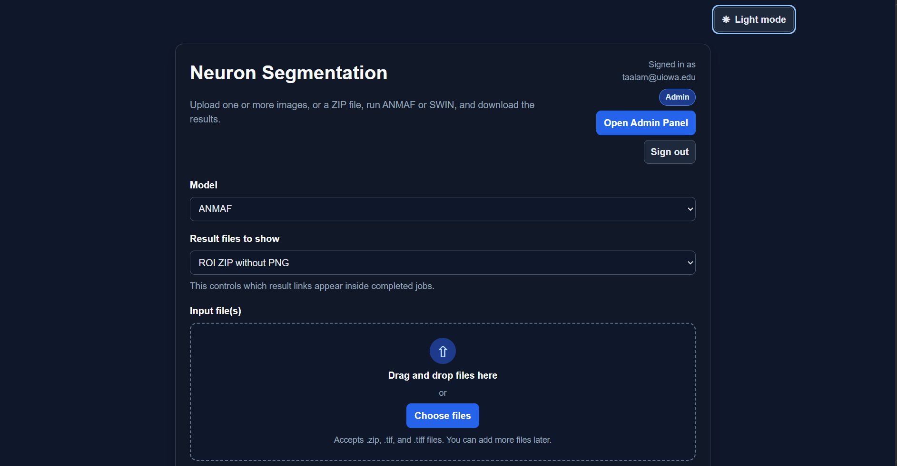

01 / Cloud & biomedical imaging
Neuron Segmentation Platform
An AWS-backed platform for automated cell segmentation. I built the cloud infrastructure and integrated existing models to support image uploads, queued processing, and result retrieval.
Explore Project